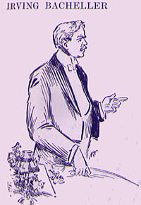

|
 IRVING BACHELLER said: IF the world's a stage in which every one has a part, there are all too many of us among the supers. Sometimes I have wondered why Mark Twain is permitted to hold the centre of the stage and talk with kings and princes, and delight or dismay them with fine wit, while our business is only to laugh and clap our hands and do the small, inglorious errands of the play. He has no uncommon talent as a player. Most any of us, had we his lines, had we his make-up, and especially, his wig, could win applause. (Laughter.) I knew a man who saw the stage before he began to play a part -- when he stood waiting in the crowded wings for his cue. I am going to consider for a moment that scene upon which he entered. New England and the South were on one side of the stage; on the other was a new West, and between them one could see growing towns and cities, and ploughs breaking the virgin prairies, and caravans crossing them going West. The play, since the martial scenes of 1814, had grown dull and wearisome. Slowly it was moving toward a tragic climax. In one corner of the stage was a race in chains -- in another, a stern-faced people claiming to be free and yet the slaves of a cruel and inveterate tyranny. In this bondage birth was a crime, life a penalty, toil a cure, leisure a peril, and earth a desert with all main roads leading to the torrid zone of eternity. One learned first that he was to blame for the sins of Adam, and next that he was more to blame for doubting it. This puzzling situation destroyed his sense of justice, while toil wore away his strength, and beans and pork and pie fell upon his liver. (Laughter.) He often quarrelled with his neighbor, and his neighbor, having provocation, if not deeper trouble, quarrelled back. A boy was punished by his father and set upon by the devil and scared by the minister and bled by the doctor and deprived of youth by discipline. This last was the greatest offence of all, for a boy without boyhood is apt to be a man without manhood. Later his soul was mortgaged to Satan, his land to the rich man, his body to a large and increasing family. He feared a score of enemies, including himself. He feared everything but riches, knowing, possibly, by some dep and truthful intuition, that the needle's eye would be broad enough for him. Those days religion was a bit like modern life-insurance -- the elect increased their salaries while the general policy-holder had only a dwindling hope. (Laughter.) The devil sat in the House of Mirth and corrupted the Legislature. (Laughter.) But, thank God, while we may call it life-insurance for the policy-holder, it has proved to be death-insurance for the devil and his friends. (Laughter.) Therein the analogy still holds. In time the people rose against their oppressors. As we see the play in our memories we do not wonder that such a situation of injustice and despair must have its end. The great scene-shifter had as if he were moving the old hell out of the future toward the past, -- that ample storeroom of worn-out properties -- and as if, then, it were passing the present. It may be he thought it had served its purpose and was occupying too much room. The ponderous thing seemed to have stuck in the centre of the stage, and the devil and his allies were doing their best to hold it down. Many of the supers began to smile. It may be they were the least bit amused -- it may be they were a little weary and longing for more cheerful scenes. Be that as it may, the manager had already found his great comedian. In the next act we see the son of the Puritans leave their gloomy home and join the many caravans that are going West. We see them delve and build; we see them forget their kinship to the worm; we seem them find gold and something better -- happiness -- for it is a fact that real American happiness was first discovered in the West. In the open air and the frolic of the camp they enjoyed the belated, careless boyhood of a man. For better or worse they threw off the yoke of the devil's tyranny and declared themselves free and independent. It was a time of great discoveries, and the greatest was this: on the lonely plain and mountain they discovered God in their own hearts, and He spoke to them with a singular and loving authority. Then and there an historic thing happened -- every man became his own preacher. If the sermon were not so he didn't have to believe it. We see men learning that, instead of being to blame for Adam's sin, Adam was at least partly to blame for theirs; that toil is not a curse, but a blessing; that every-day religion is seven times more important than Sunday religion; that fear makes a coward of a man. "God hates a coward" became one of their maxims. Suddenly a wave of laughter sweeps over the stage from the far left. A young man has come in view, and is telling a story. The saddened spirit of the crowd finds relief and joy in it. They call him to the centre of the stage, and there he has remained, shooting folly as it flew, and filling all hearts with the immeasurable bounty of his own. The crowd began to hustle Satan towards the wings. He voluntarily gave them the considerable benefit of half his salary for two weeks and then resigned. Our comedian scattered the bread of happiness, and dark shadows grew less in the light of his good cheer. Many kept up their policies in the old insurance company, and read Mark Twain for consolation, and wisdom came with humor and courage with cheerfulness. Now who has not discovered the moral of the great play that heaven may be extended so as to fill the future and the present and leave no room for hell save in the past? Mark Twain, exorciser of demons, leader in the conquest of the great upper world of fancy, discoverer of eternal youth-- when I think of you and of that you have done I am reminded of two lines from Pindar: "The divinity that dwelleth in these things groweth not old,(Applause.) |